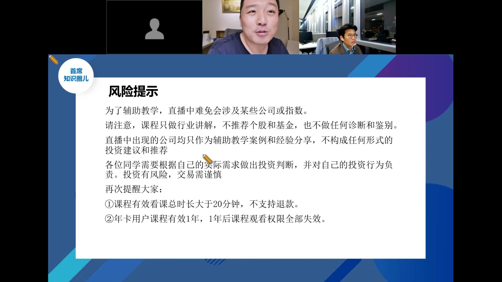
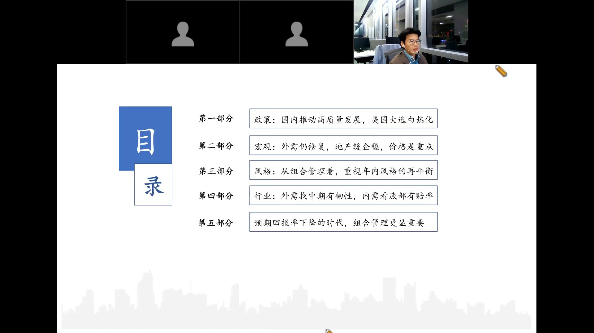
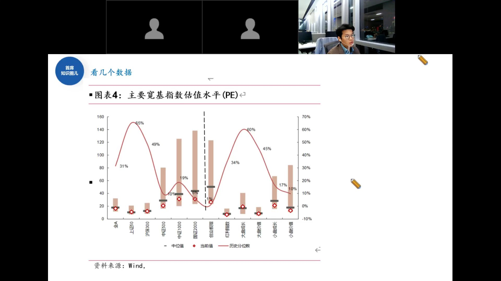
邓玉林开场即指出，6月下旬以来市场调整较多，上半年表现较好的出口链、红利、煤炭等板块均有不同程度回调，投资者情绪低迷。但越是悲观环境越需要坚守——从估值中期维度看，目前主要宽基指数的PE水位都处于历史较低位置。
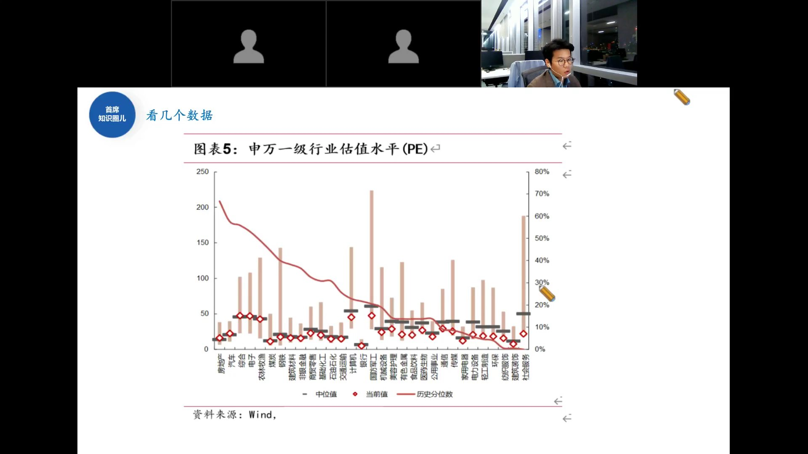
除上半年涨幅较大的板块外，大部分行业PE处于历史10%—20%分位以下，即比历史上80%—90%的时间都便宜。
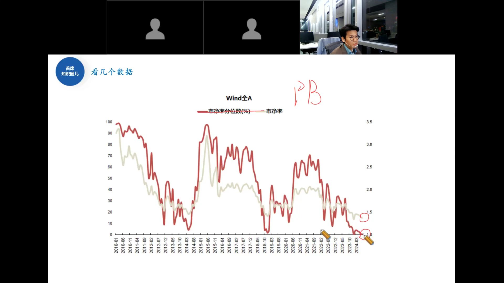
以PB维度看，Wind全A当前市净率已接近历史极低位置，风险溢价（股息率减无风险收益率）处于较高水平。这意味着股票相对债券的吸引力较强，从风险溢价角度看再大幅回调的概率不高。
核心判断：估值短期无法精准预判，但中期维度看A股无论纵向比历史还是横向比全球，都处于便宜区间，具备较好的预期回报率基础。
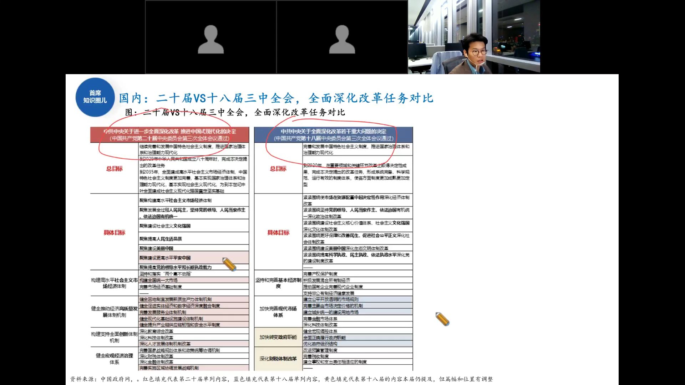
邓玉林将二十届三中全会《决定》与十八届三中全会《决定》做了系统对比（红色为本次新增内容）。总体观察：
三中全会描绘的是中长期体制改革方向，并非短期行情触发器。但与市场此前预期相比，改革涉及经济、资本市场、新产业、科教、城乡、生态等多个方面，仍是未来市场的基本基调与主方向。
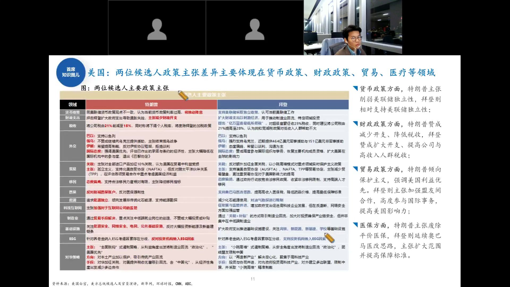
海外两大关键变量：美国大选与美联储降息。两党在以下领域差异显著：
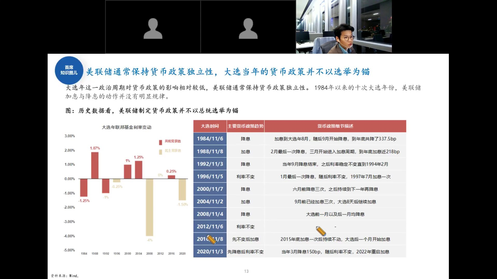
邓玉林特别指出：1984年以来的十次大选年份，美联储加息降息并无明显规律。美联储通常保持货币政策独立性，大选这一政治周期对货币政策影响相对较低——不应过度押注"美联储为大选服务"的逻辑。
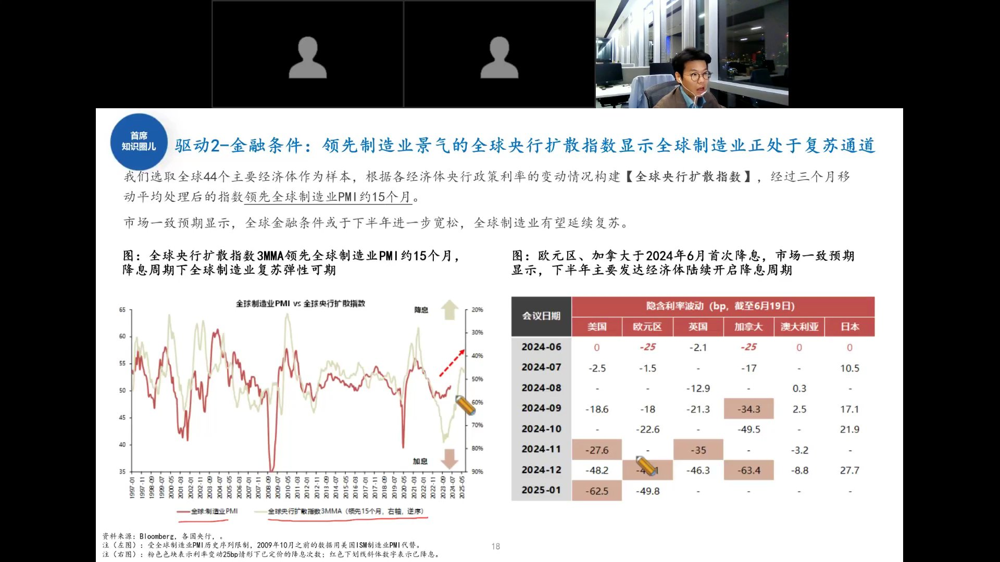
选取全球44个主要经济体，根据各国央行政策利率变动构建"全球央行扩散指数"，经三个月移动平均后领先全球制造业PMI约15个月。当前该指数显示全球制造业正处于复苏通道。
市场一致预期显示，下半年主要发达经济体（欧元区、加拿大已于2024年6月首次降息）将陆续开启降息周期，全球金融条件进一步宽松。
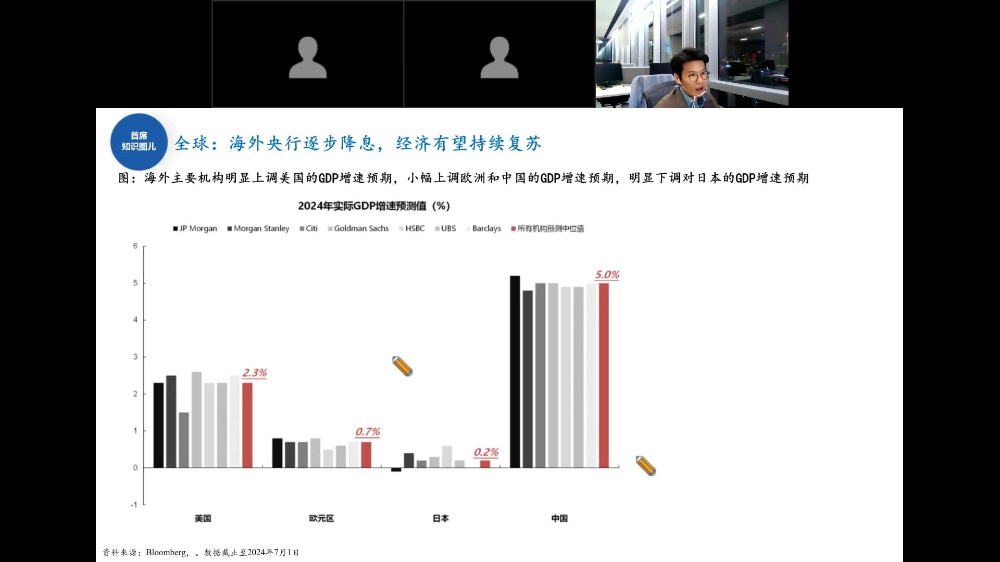
海外主要机构明显上调美国GDP增速预期（中位5.0%），小幅上调欧洲（0.7%）和中国（5.0%），明显下调日本（0.2%）。
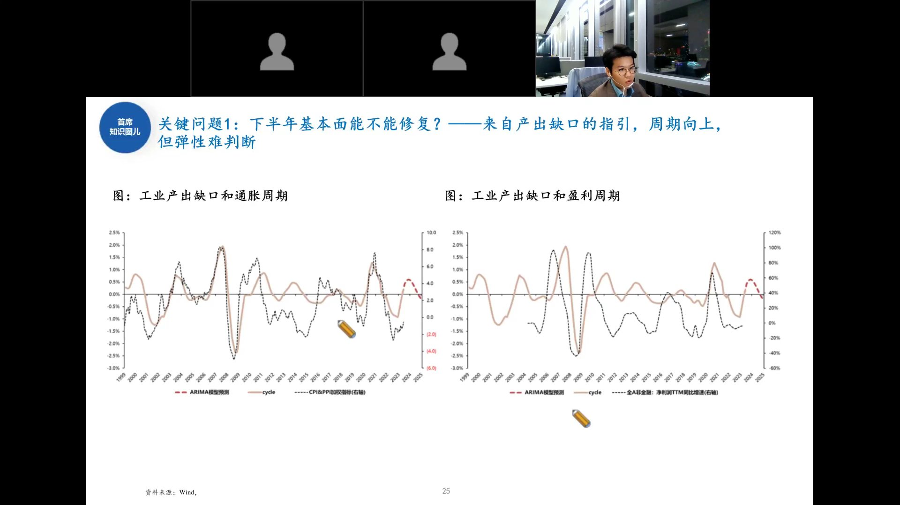
下半年基本面能不能修复？邓玉林用"产出缺口"框架回答：
结论：周期方向向上是确定的，但向上的幅度（弹性）取决于价格因素——这正是引出下一个关键问题的逻辑。
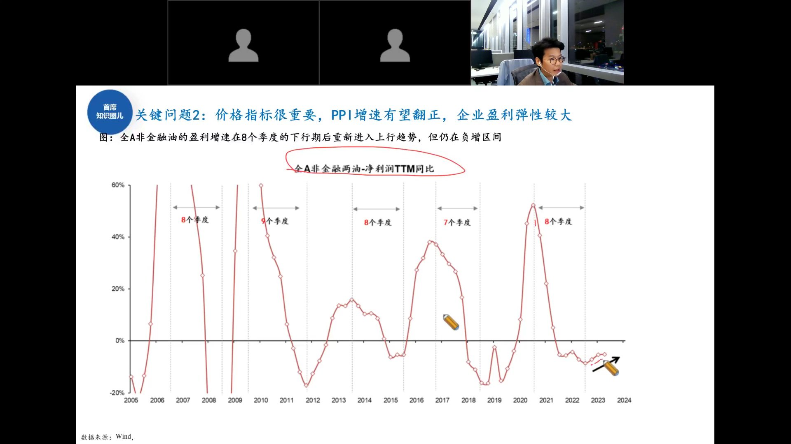
全A非金融两油的盈利增速在经历8个季度下行后，重新进入上行趋势，但仍在负增区间。历史上每轮盈利下行期持续约7—9个季度，本轮已持续8个季度，时间维度接近尾声。
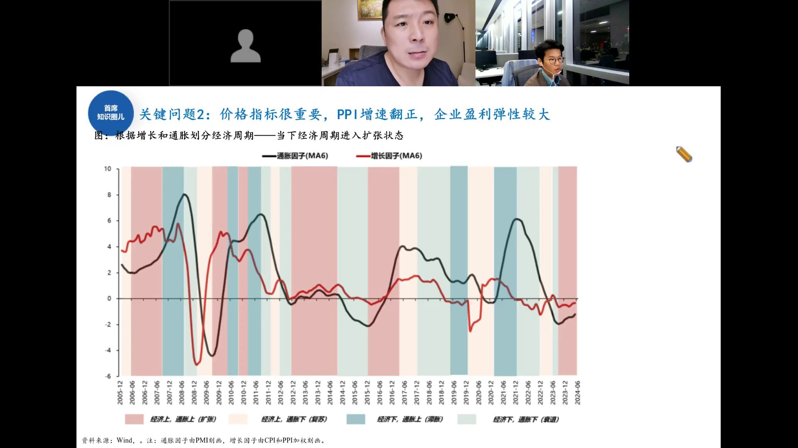
根据增长因子（CPI+PPI加权）和通胀因子（PMI）划分经济周期，当前已进入"经济上、通胀上"的扩张状态。PPI在-0.3%左右，年终利润有望翻正。
价格指标是关键：PPI增速一旦翻正，企业利润的弹性会很大。这是下半年基本面修复的核心观察变量。
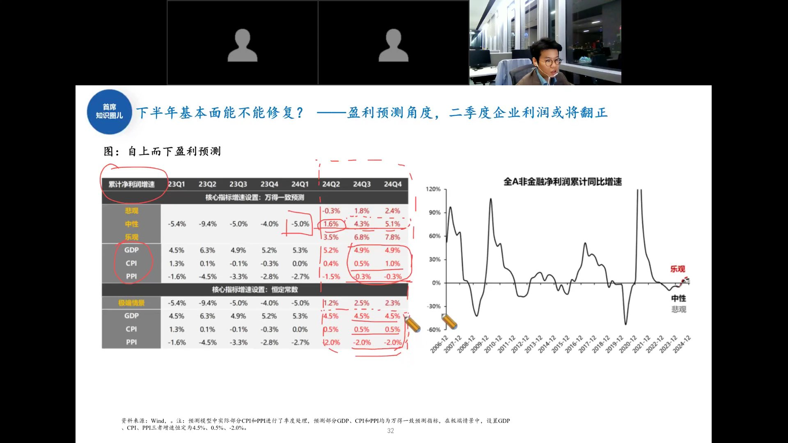
邓玉林给出三情景盈利预测（基于万得一致预期GDP/CPI/PPI）：
极端情景下（GDP 4.5%、CPI 0.5%、PPI -2.0%），Q2也有1.2%。整体判断二季度企业利润或将翻正。
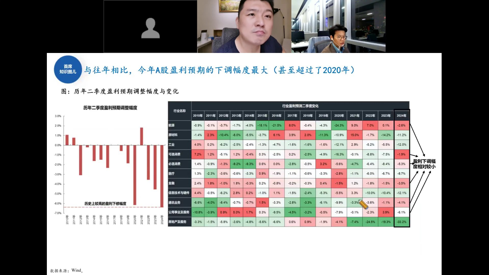
与往年相比，今年A股盈利预期的下调幅度最大，甚至超过了2020年。这意味着预期已被压得很低，一旦实际数据好于预期，反转弹性较大。其中必选消费、医药等板块盈利下调幅度相对较小。
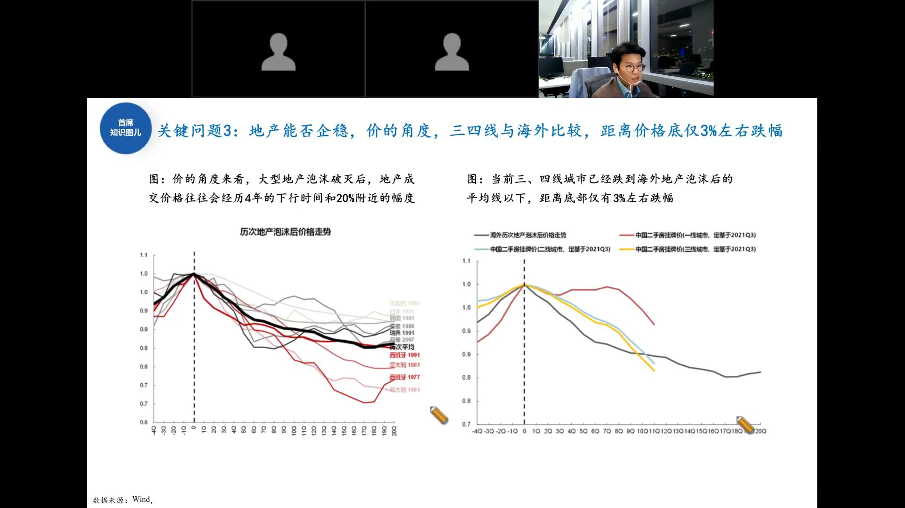
从"价"的角度看：大型地产泡沫破灭后，成交价格往往经历约4年下行、20%附近跌幅。对比海外历次危机（日本、美国、西班牙等），当前中国三四线城市房价已跌到海外泡沫后平均线以下，距离价格底仅约3%左右跌幅。
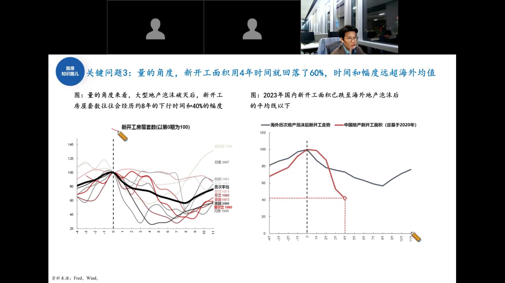
从"量"的角度看：海外大型地产泡沫后，新开工房屋套数往往经历约8年下行、40%幅度。而中国新开工面积仅用4年就回落了60%，时间和幅度远超海外均值——这意味着"量"的调整已经非常充分。
地产判断：价格端三四线已接近海外泡沫后的底部区域；量的调整幅度和速度都已远超海外历史经验。地产对经济的拖累有望逐步收敛。
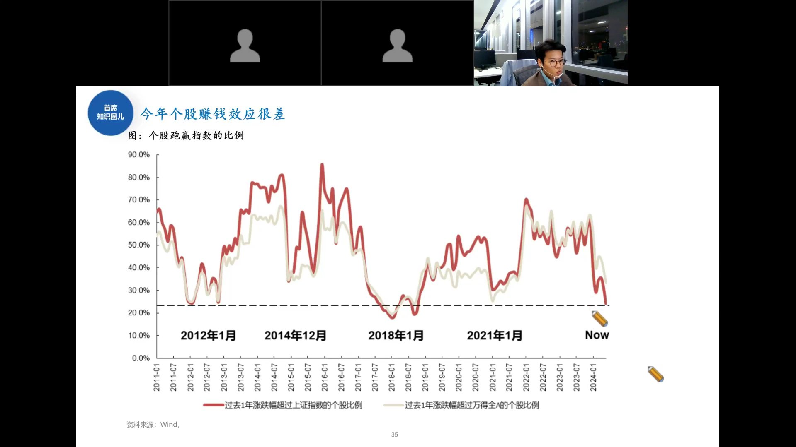
今年个股赚钱效应很差：过去一年涨跌幅超过上证指数的个股比例已降至约25%，接近2018年初的低位。这意味着"选股"难度极大，大多数股票跑不赢指数。
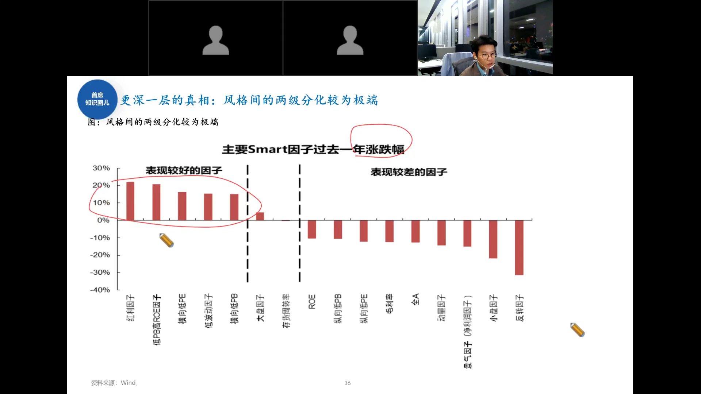
更深层的真相是风格间的两极分化：
市场极端偏好"低估值+高股息+大盘"，而小盘、成长、反转类因子被大幅抛弃。这种极端分化本身就是再均衡的前提。
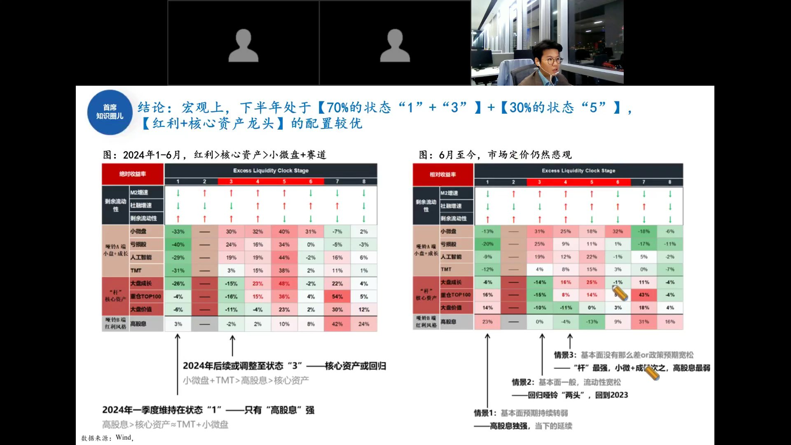
邓玉林用"超额流动性时钟"框架（M2增速、社融增速、剩余流动性三因子划分8个状态）给出结论：
下半年宏观判断：70%概率处于状态"1"+"3"，30%概率处于状态"5"。配置上【红利+核心资产龙头】最优。
2024年一季度维持在状态"1"——只有高股息强；1—6月红利>核心资产>小微盘+赛道。后续或调整至状态"3"——核心资产或回归。
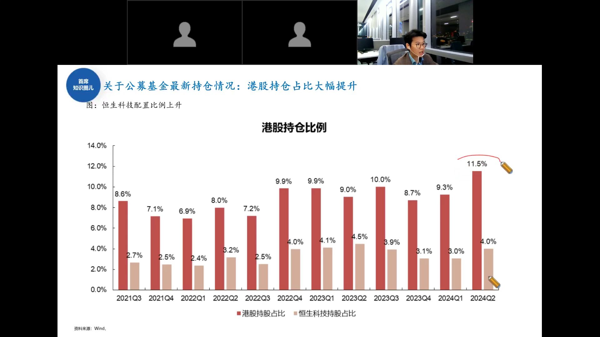
2024Q2公募基金港股持仓占比大幅提升至11.5%（2024Q1为9.3%），恒生科技持仓占比4.0%，为2021年以来高位。
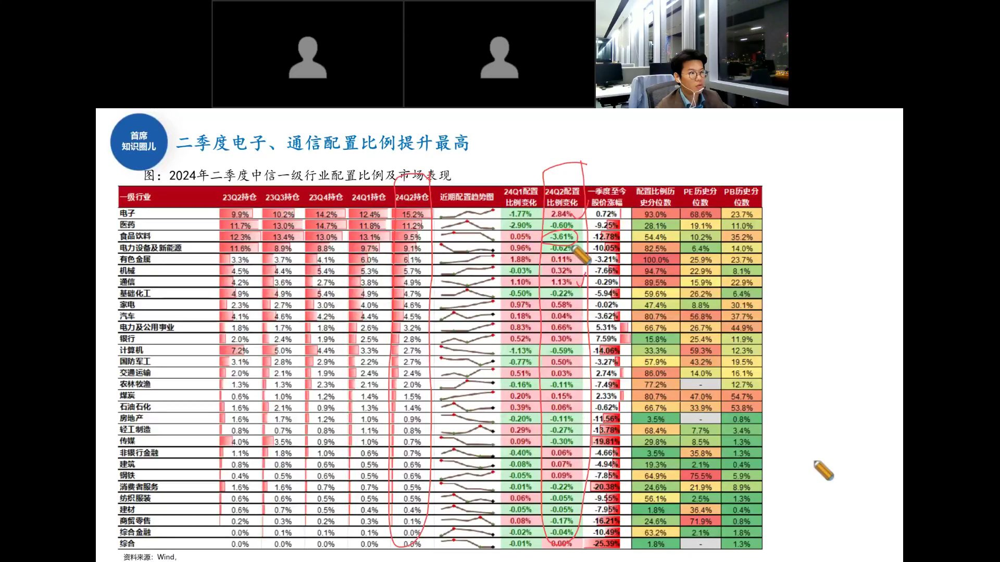
二季度电子、通信配置比例提升最高：电子从12.4%升至15.2%，通信从3.8%升至4.9%。食品饮料配置下降3.61%，传媒下降19.81%。
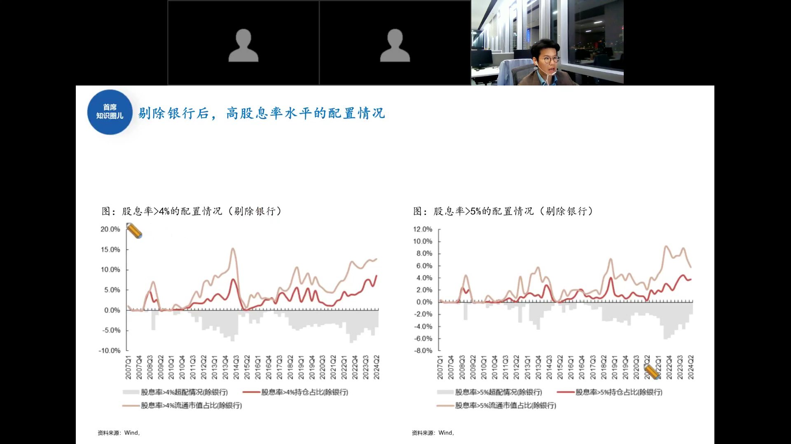
剔除银行后，股息率>4%和>5%的配置情况均处于历史高位，说明公募对高股息的配置已较为充分。
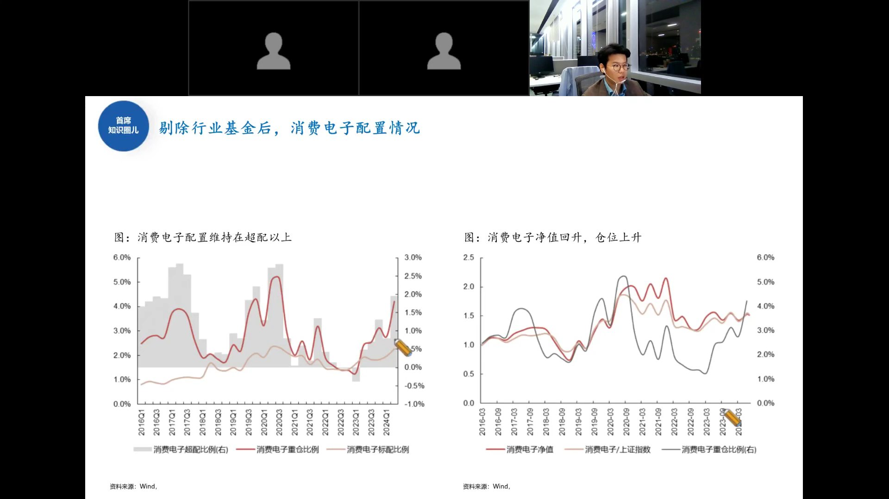
剔除行业基金后，消费电子配置维持在超配以上，净值回升带动仓位上升。
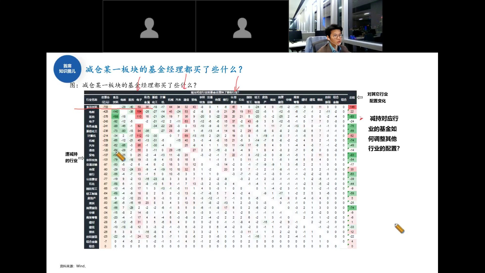
从调仓矩阵看，减仓食品饮料的基金主要加仓了电子、医药；减仓电子的基金主要加仓了有色、基础化工。板块间资金再平衡明显。
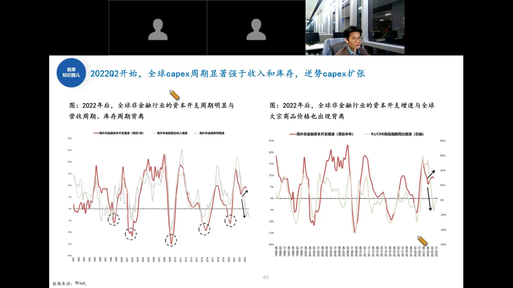
2022Q2开始，全球capex周期显著强于收入和库存周期，呈现逆势capex扩张。海外非金融资本开支增速与全球大宗商品价格也出现背离。
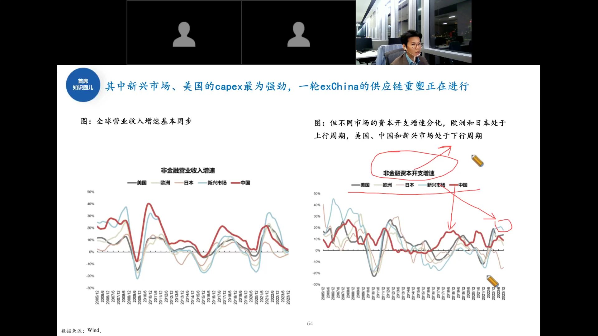
分市场看：全球营收增速基本同步，但资本开支增速分化——欧洲和日本处于上行周期，美国、中国和新兴市场处于下行周期。新兴市场和美国capex最为强劲，一轮exChina供应链重塑正在进行。
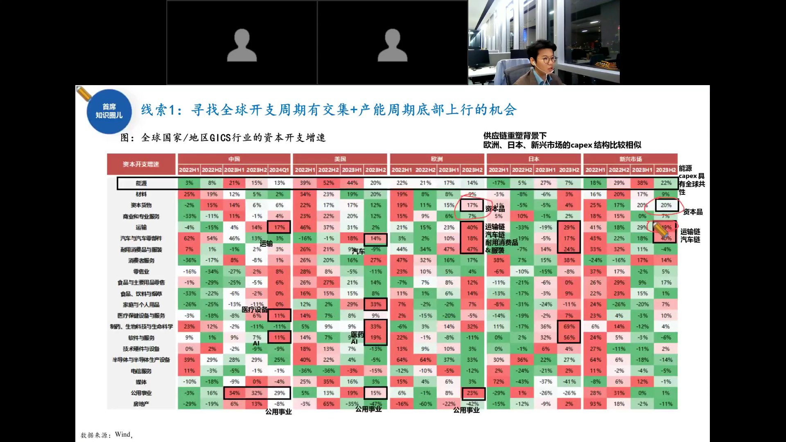
线索1：寻找全球开支周期有交集+产能周期底部上行的机会。供应链重塑背景下，欧洲、日本、新兴市场的capex结构比较相似，能源、资本品、运输链、汽车链、公用事业等方向值得关注。
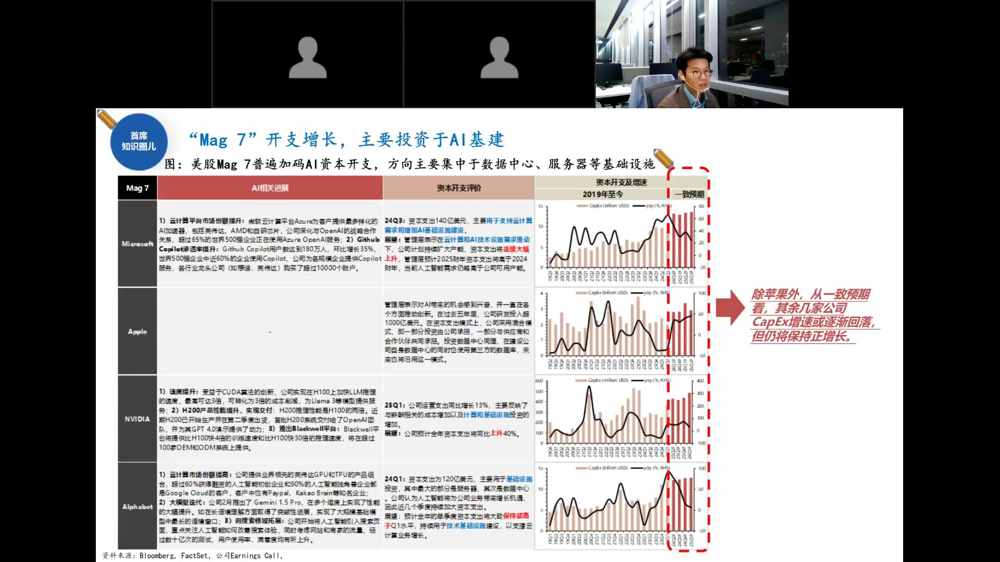
美股Mag7普遍加码AI资本开支，方向集中于数据中心、服务器等基础设施。除苹果外，从一致预期看其余几家公司CapEx增速或逐渐回落，但仍将保持正增长。微软24Q3资本开支140亿美元，英伟达Q1运营支出同比增长13%。
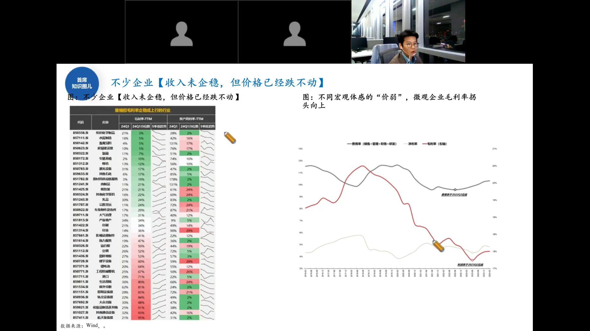
不少企业出现"收入未企稳，但价格已经跌不动"的特征。左侧表格筛选出量缩但毛利率企稳或上行的行业（纺织化学品、水泥制造、畜禽养殖、房屋建设、氯碱等），右侧显示不同宏观体感的"价弱"下，微观企业毛利率已拐头向上。
这是"增配中下游"的微观基础：收入端还弱，但价格端和毛利率端已经见底回升，意味着中下游利润对需求复苏的弹性更大。
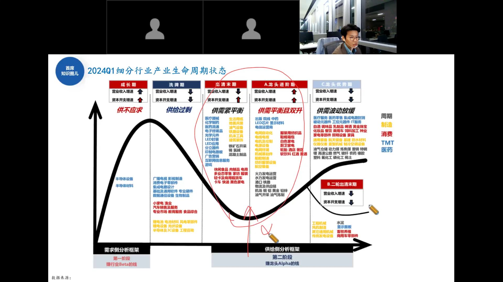
邓玉林用产业生命周期框架（营收增速×资本开支增速）将细分行业分为：成长期（供不应求）、洗牌期（供给过剩）、出清末期（供需紧平衡）、龙头进阶期（供需平衡且双升）、龙头优势期（供需波动放缓）。
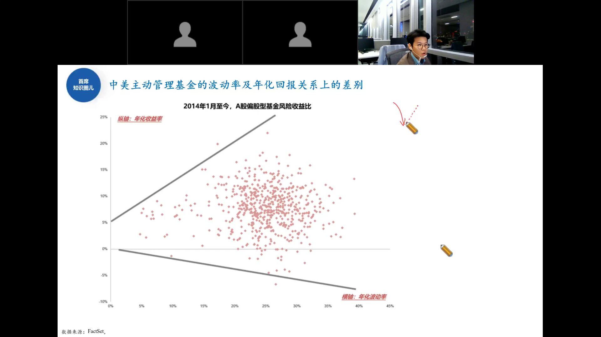
2014年1月至今，A股偏股型基金呈现"高波动≠高收益"的特征——风险收益比曲线向下倾斜，意味着在A股承担更高波动并未获得相应补偿。
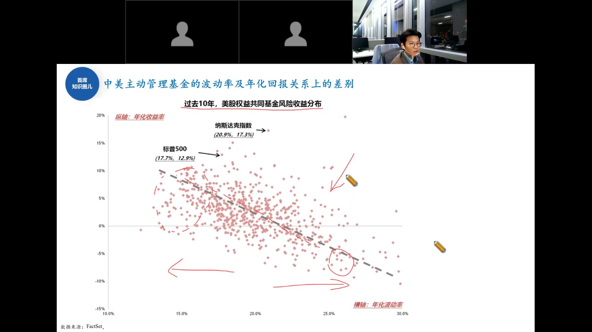
对比过去10年美股权益共同基金：标普500年化收益17.7%、波动12.9%；纳斯达克年化20.9%、波动17.3%。美股基金呈现更正常的风险收益补偿关系。
预期回报率下降的时代，组合管理更显重要。A股主动基金承担波动却未获得对等回报，因此更需要通过风格再均衡、哑铃配置来控制下行、捕捉结构性机会。